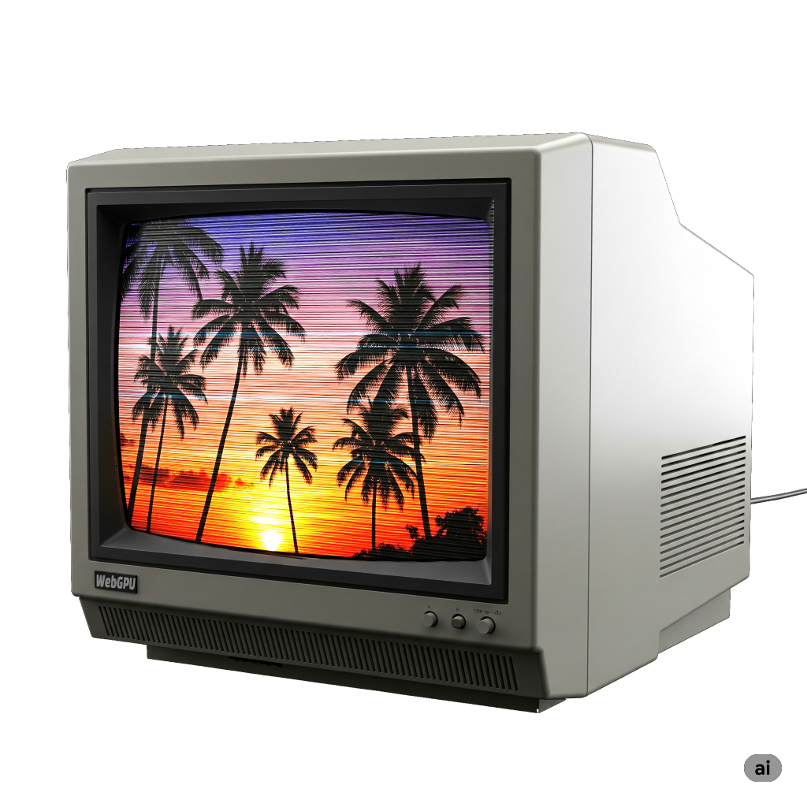

后处理就是在你创建了"原始"图像之后，再对其进行一些处理。后处理可以应用于照片、视频、二维场景或三维场景。它通常意味着你有一张图像，然后对该图像应用一些效果，比如在 Instagram 上选择滤镜。
在本站几乎所有示例中，我们都是渲染到画布纹理。要进行后处理，我们改为渲染到另一个纹理。然后在应用一些图像处理效果的同时，将该纹理渲染到画布上。
作为一个简单的例子，让我们尝试将图像后处理成类似 1980 年代电视的样子，带有扫描线和 CRT RGB 元素。

为此，我们采用计时相关文章顶部的动画示例。首先，我们要让它渲染到一个单独的纹理，然后将该纹理渲染到画布上。
下面是一个绘制大裁剪空间三角形的着色器，它传递正确的 UV 坐标，以便在裁剪空间中覆盖三角形的适合部分。
const postProcessModule = device.createShaderModule({
code: /* wgsl */ `
struct VSOutput {
@builtin(position) position: vec4f,
@location(0) texcoord: vec2f,
};
@vertex fn vs(
@builtin(vertex_index) vertexIndex : u32,
) -> VSOutput {
var pos = array(
vec2f(-1.0, -1.0),
vec2f(-1.0, 3.0),
vec2f( 3.0, -1.0),
);
var vsOutput: VSOutput;
let xy = pos[vertexIndex];
vsOutput.position = vec4f(xy, 0.0, 1.0);
vsOutput.texcoord = xy * vec2f(0.5, -0.5) + vec2f(0.5);
return vsOutput;
}
@group(0) @binding(0) var postTexture2d: texture_2d<f32>;
@group(0) @binding(1) var postSampler: sampler;
@fragment fn fs2d(fsInput: VSOutput) -> @location(0) vec4f {
let color = textureSample(postTexture2d, postSampler, fsInput.texcoord);
return vec4f(color);
}
`,
})
这非常简单，类似于我们在将图像与纹理结合使用的文章中用于生成 mipmap 的着色器。唯一的主要区别是原来的着色器使用 2 个三角形来覆盖裁剪空间，这个使用1 个大三角形。
然后，为了使用这些着色器，我们需要一个管道：
const postProcessPipeline = device.createRenderPipeline({
layout: 'auto',
vertex: { module: postProcessModule },
fragment: {
module: postProcessModule,
targets: [ { format: presentationFormat }],
},
});
这个管道将渲染到画布，所以我们需要将目标格式设置为之前查询的 presentationFormat。
我们需要一个采样器和一个渲染通道描述符。
const postProcessSampler = device.createSampler({
minFilter: 'linear',
magFilter: 'linear',
});
const postProcessRenderPassDescriptor = {
label: 'post process render pass',
colorAttachments: [
{ loadOp: 'clear', storeOp: 'store' },
],
};
然后，不再让原始渲染通道渲染到画布，而是需要它渲染到一个单独的纹理。
+ let renderTarget;
+
+ function setupPostProcess(canvasTexture) {
+ if (renderTarget?.width === canvasTexture.width &&
+ renderTarget?.height === canvasTexture.height) {
+ return;
+ }
+
+ renderTarget?.destroy();
+ renderTarget = device.createTexture({
+ size: canvasTexture,
+ format: 'rgba8unorm',
+ usage: GPUTextureUsage.RENDER_ATTACHMENT | GPUTextureUsage.TEXTURE_BINDING,
+ });
+ const renderTargetView = renderTarget.createView();
+ renderPassDescriptor.colorAttachments[0].view = renderTargetView;
+ }
let then = 0;
function render(now) {
now *= 0.001; // 转换为秒
const deltaTime = now - then;
then = now;
- // 从画布上下文获取当前纹理，
- // 并将其设置为要渲染到的纹理。
- renderPassDescriptor.colorAttachments[0].view =
- context.getCurrentTexture().createView();
+ const canvasTexture = context.getCurrentTexture();
+ setupPostProcess(canvasTexture);
...
上面，我们将当前的 canvasTexture 传入 setupPostProcess。它检查"渲染目标"纹理的大小是否与画布相同。如果不是，它会创建一个相同大小的新纹理。
然后它将原始 renderPassDescriptor 的颜色附件设置为此渲染目标纹理。
由于旧的管道将渲染到此纹理，我们需要为该纹理的格式更新它：
const pipeline = device.createRenderPipeline({
label: 'per vertex color',
layout: 'auto',
vertex: {
module,
buffers: [
...
],
},
fragment: {
module,
- targets: [{ format: presentationFormat }],
+ targets: [{ format: 'rgba8unorm' }],
},
});
仅这些更改就会开始将原始场景渲染到渲染目标纹理上，但我们仍然需要在画布上绘制一些内容，否则我们什么都看不到，所以让我们这样做。
function postProcess(encoder, srcTexture, dstTexture) {
postProcessRenderPassDescriptor.colorAttachments[0].view = dstTexture.createView();
const pass = encoder.beginRenderPass(postProcessRenderPassDescriptor);
pass.setPipeline(postProcessPipeline);
pass.setBindGroup(0, postProcessBindGroup);
pass.draw(3);
pass.end();
}
...
let then = 0;
function render(now) {
now *= 0.001; // 转换为秒
const deltaTime = now - then;
then = now;
const canvasTexture = context.getCurrentTexture();
setupPostProcess(canvasTexture);
const encoder = device.createCommandEncoder();
const pass = encoder.beginRenderPass(renderPassDescriptor);
...
pass.draw(numVertices, settings.numObjects);
pass.end();
+ postProcess(encoder, renderTarget, canvasTexture);
const commandBuffer = encoder.finish();
device.queue.submit([commandBuffer]);
requestAnimationFrame(render);
}
requestAnimationFrame(render);
唯一需要做的另一个调整。让我们移除对象数量设置，因为它与后处理无关。
const settings = {
- numObjects: 100,
+ numObjects: 200,
};
const gui = new GUI();
- gui.add(settings, 'numObjects', 0, kNumObjects, 1);
我们可以完全去掉 settings.numObjects，但这需要在几个不同的地方进行编辑，所以让我们暂时保留它。我们将数量设置为 200，只是为了填充图像。
如果运行这个程序，与原来的没有明显的区别。
区别在于我们正在渲染到渲染目标纹理，然后将那个纹理渲染到画布，所以现在我们可以开始应用一些效果了。
老式 CRT 最明显的效果是老式 CRT 有可见的扫描线。这是因为图像投影的方式是通过使用磁铁将光束以水平线的模式引导穿过屏幕。
我们可以通过使用正弦波生成明暗图案并取绝对值来获得类似的效果。
让我们把它添加到代码中。首先修改着色器来应用这个正弦波。
const postProcessModule = device.createShaderModule({
code: /* wgsl */ `
struct VSOutput {
@builtin(position) position: vec4f,
@location(0) texcoord: vec2f,
};
@vertex fn vs(
@builtin(vertex_index) vertexIndex : u32,
) -> VSOutput {
var pos = array(
vec2f(-1.0, -1.0),
vec2f(-1.0, 3.0),
vec2f( 3.0, -1.0),
);
var vsOutput: VSOutput;
let xy = pos[vertexIndex];
vsOutput.position = vec4f(xy, 0.0, 1.0);
vsOutput.texcoord = xy * vec2f(0.5, -0.5) + vec2f(0.5);
return vsOutput;
}
+ struct Uniforms {
+ effectAmount: f32,
+ bandMult: f32,
+ };
@group(0) @binding(0) var postTexture2d: texture_2d<f32>;
@group(0) @binding(1) var postSampler: sampler;
+ @group(0) @binding(2) var<uniform> uni: Uniforms;
@fragment fn fs2d(fsInput: VSOutput) -> @location(0) vec4f {
+ let banding = abs(sin(fsInput.position.y * uni.bandMult));
+ let effect = mix(1.0, banding, uni.effectAmount);
let color = textureSample(postTexture2d, postSampler, fsInput.texcoord);
- return vec4f(color);
+ return vec4f(color.rgb * effect, color.a);
}
`,
});
我们的正弦波基于 fsInput.position.y，这是正在写入的像素的 y 坐标。换句话说，对于从 0 开始的每条扫描线，它将是 0.5、1.5、2.5、3.5 等等。bandMult 允许我们调整条纹的大小，effectAmount 允许我们打开和关闭效果，这样我们就可以比较有效果和没有效果的区别。
要使用新的着色器，我们需要设置一个 uniform 缓冲区。
const postProcessUniformBuffer = device.createBuffer({
size: 8,
usage: GPUBufferUsage.UNIFORM | GPUBufferUsage.COPY_DST,
});
我们需要将它添加到绑定组中：
postProcessBindGroup = device.createBindGroup({
layout: postProcessPipeline.getBindGroupLayout(0),
entries: [
{ binding: 0, resource: renderTargetView },
{ binding: 1, resource: postProcessSampler },
+ { binding: 2, resource: postProcessUniformBuffer },
],
});
然后，我们需要添加一些设置：
const settings = {
numObjects: 200,
+ affectAmount: 1,
+ bandMult: 1,
};
const gui = new GUI();
+ gui.add(settings, 'affectAmount', 0, 1);
+ gui.add(settings, 'bandMult', 0.01, 2.0);
并且我们需要将这些设置上传到 uniform 缓冲区：
function postProcess(encoder, srcTexture, dstTexture) {
+ device.queue.writeBuffer(
+ postProcessUniformBuffer,
+ 0,
+ new Float32Array([
+ settings.affectAmount,
+ settings.bandMult,
+ ]),
+ );
postProcessRenderPassDescriptor.colorAttachments[0].view = dstTexture.createView();
const pass = encoder.beginRenderPass(postProcessRenderPassDescriptor);
pass.setPipeline(postProcessPipeline);
pass.setBindGroup(0, postProcessBindGroup);
pass.draw(3);
pass.end();
}
这就给了我们一个类似 CRT 的扫描线效果。
CRT 和 LCD 一样，将图像分割为红色、绿色和蓝色区域。在 CRT 上，这些区域通常比今天大多数 LCD 大得多，所以有时这会很突出。让我们添加一些效果来近似这种效果。
首先修改着色器：
const postProcessModule = device.createShaderModule({
code: /* wgsl */ `
struct VSOutput {
@builtin(position) position: vec4f,
@location(0) texcoord: vec2f,
};
@vertex fn vs(
@builtin(vertex_index) vertexIndex : u32,
) -> VSOutput {
var pos = array(
vec2f(-1.0, -1.0),
vec2f(-1.0, 3.0),
vec2f( 3.0, -1.0),
);
var vsOutput: VSOutput;
let xy = pos[vertexIndex];
vsOutput.position = vec4f(xy, 0.0, 1.0);
vsOutput.texcoord = xy * vec2f(0.5, -0.5) + vec2f(0.5);
return vsOutput;
}
struct Uniforms {
effectAmount: f32,
bandMult: f32,
+ cellMult: f32,
+ cellBright: f32,
};
@group(0) @binding(0) var postTexture2d: texture_2d<f32>;
@group(0) @binding(1) var postSampler: sampler;
@group(0) @binding(2) var<uniform> uni: Uniforms;
@fragment fn fs2d(fsInput: VSOutput) -> @location(0) vec4f {
let banding = abs(sin(fsInput.position.y * uni.bandMult));
+ let cellNdx = u32(fsInput.position.x * uni.cellMult) % 3;
+ var cellColor = vec3f(0);
+ cellColor[cellNdx] = 1;
+ let cMult = cellColors[cellNdx] + uni.cellBright;
- let effect = mix(1.0, banding, uni.effectAmount);
+ let effect = mix(vec3f(1), banding * cMult, uni.effectAmount);
let color = textureSample(postTexture2d, postSampler, fsInput.texcoord);
return vec4f(color.rgb * effect, 1);
}
`,
});
上面我们使用 fsInput.position.x，这是正在写入的像素的 x 坐标。通过乘以 cellMult，我们可以选择一个单元格大小。我们转换为整数并取模 3。这给了我们一个数字 0、1 或 2，我们用它来将 cellColor 的红色、绿色或蓝色通道设置为 1。
我们加入 cellBright 作为调整，然后将旧的条纹和新的效果相乘。effect 从 f32 变为 vec3f，这样它可以独立影响每个通道。
回到 JavaScript，我们需要调整 uniform 缓冲区的大小：
const postProcessUniformBuffer = device.createBuffer({
- size: 8,
+ size: 16,
usage: GPUBufferUsage.UNIFORM | GPUBufferUsage.COPY_DST,
});
并在 GUI 中添加一些设置：
const settings = {
numObjects: 200,
affectAmount: 1,
bandMult: 1,
+ cellMult: 0.5,
+ cellBright: 1,
};
const gui = new GUI();
gui.add(settings, 'affectAmount', 0, 1);
gui.add(settings, 'bandMult', 0.01, 2.0);
+ gui.add(settings, 'cellMult', 0, 1);
+ gui.add(settings, 'cellBright', 0, 2);
并上传新的设置：
function postProcess(encoder, srcTexture, dstTexture) {
device.queue.writeBuffer(
postProcessUniformBuffer,
0,
new Float32Array([
settings.affectAmount,
settings.bandMult,
+ settings.cellMult,
+ settings.cellBright,
]),
);
postProcessRenderPassDescriptor.colorAttachments[0].view = dstTexture.createView();
const pass = encoder.beginRenderPass(postProcessRenderPassDescriptor);
pass.setPipeline(postProcessPipeline);
pass.setBindGroup(0, postProcessBindGroup);
pass.draw(3);
pass.end();
}
现在我们有了类似 CRT 颜色元素的效果。
上面的效果并不意味着完美地代表 CRT 的工作原理。相反，它们只是被用来暗示看起来像 CRT，并且希望易于理解。你可以在网上找到更花哨的技术。
有人会问，我们能用计算着色器做这个吗？而且，也许更重要的是，我们应该用吗？让我们先讨论"能不能"。
我们在关于存储纹理的文章中介绍了使用计算着色器渲染到纹理。
要将代码转换为使用计算着色器，我们需要将 STORAGE_BINDING 用法添加到画布纹理，根据前面提到的文章，这需要检查我们是否可以并选择支持它的纹理格式。
async function main() {
const adapter = await navigator.gpu?.requestAdapter();
+ const hasBGRA8UnormStorage = adapter?.features.has('bgra8unorm-storage');
- const device = await adapter?.requestDevice();
+ const device = await adapter?.requestDevice({
+ requiredFeatures: [
+ ...(hasBGRA8UnormStorage ? ['bgra8unorm-storage'] : []),
+ ],
+ });
if (!device) {
fail('need a browser that supports WebGPU');
return;
}
// 从画布获取 WebGPU 上下文并配置它
const canvas = document.querySelector('canvas');
const context = canvas.getContext('webgpu');
- const presentationFormat = navigator.gpu.getPreferredCanvasFormat();
+ const presentationFormat = hasBGRA8UnormStorage
+ ? navigator.gpu.getPreferredCanvasFormat()
+ : 'rgab8unorm';
context.configure({
device,
format: presentationFormat,
+ usage: GPUTextureUsage.RENDER_ATTACHMENT |
+ GPUTextureUsage.TEXTURE_BINDING |
+ GPUTextureUsage.STORAGE_BINDING,
});
我们需要将着色器切换为写入存储纹理：
const postProcessModule = device.createShaderModule({
code: /* wgsl */ `
- struct VSOutput {
- @builtin(position) position: vec4f,
- @location(0) texcoord: vec2f,
- };
-
- @vertex fn vs(
- @builtin(vertex_index) vertexIndex : u32,
- ) -> VSOutput {
- var pos = array(
- vec2f(-1.0, -1.0),
- vec2f(-1.0, 3.0),
- vec2f( 3.0, -1.0),
- );
-
- var vsOutput: VSOutput;
- let xy = pos[vertexIndex];
- vsOutput.position = vec4f(xy, 0.0, 1.0);
- vsOutput.texcoord = xy * vec2f(0.5, -0.5) + vec2f(0.5);
- return vsOutput;
- }
struct Uniforms {
effectAmount: f32,
bandMult: f32,
cellMult: f32,
cellBright: f32,
};
@group(0) @binding(0) var postTexture2d: texture_2d<f32>;
@group(0) @binding(1) var postSampler: sampler;
@group(0) @binding(2) var<uniform> uni: Uniforms;
+ @group(1) @binding(0) var outTexture: texture_storage_2d<${presentationFormat}, write>;
- @fragment fn fs2d(fsInput: VSOutput) -> @location(0) vec4f {
- let banding = abs(sin(fsInput.position.y * uni.bandMult));
-
- let cellNdx = u32(fsInput.position.x * uni.cellMult) % 3;
+ @compute @workgroup_size(1) fn cs(@builtin(global_invocation_id) gid: vec3u) {
+ let outSize = textureDimensions(outTexture);
+ let banding = abs(sin(f32(gid.y) * uni.bandMult));
+
+ let cellNdx = u32(f32(gid.x) * uni.cellMult) % 3;
var cellColor = vec3f(0);
cellColor[cellNdx] = 1.0;
let cMult = cellColor + uni.cellBright;
let effect = mix(vec3f(1), banding * cMult, uni.effectAmount);
- let color = textureSample(postTexture2d, postSampler, fsInput.texcoord);
- return vec4f(color.rgb * effect, color.a);
+ let uv = (vec2f(gid.xy) + 0.5) / vec2f(outSize);
+ let color = textureSampleLevel(postTexture2d, postSampler, uv, 0);
+ textureStore(outTexture, gid.xy, vec4f(color.rgb * effect, color.a));
}
`,
});
上面我们删除了顶点着色器和相关部分。我们也没有了 fsInput.position，那是正在写入的像素的坐标。相反，我们有了 gid，这是计算着色器单独调用的 global_invocation_id。我们将使用它作为我们的纹理坐标。它是一个 vec3u，所以我们需要在某些地方进行类型转换。我们也没有了 fsInput.texcoord，但我们可以用 (vec2f(gid.xy) + 0.5) / vec2f(outSize) 获得等效的结果。
我们需要停止使用渲染通道，而是使用计算通道来进行后处理。
const postProcessPipeline = device.createRenderPipeline({
layout: 'auto',
- vertex: { module: postProcessModule },
- fragment: {
- module: postProcessModule,
- targets: [ { format: presentationFormat }],
- },
+ compute: { module: postProcessModule },
});
function postProcess(encoder, srcTexture, dstTexture) {
device.queue.writeBuffer(
postProcessUniformBuffer,
0,
new Float32Array([
settings.affectAmount,
settings.bandMult,
settings.cellMult,
settings.cellBright,
]),
);
+ const outBindGroup = device.createBindGroup({
+ layout: postProcessPipeline.getBindGroupLayout(1),
+ entries: [
+ { binding: 0, resource: dstTexture },
+ ],
+ });
- postProcessRenderPassDescriptor.colorAttachments[0].view = dstTexture.createView();
- const pass = encoder.beginRenderPass(postProcessRenderPassDescriptor);
+ const pass = encoder.beginComputePass();
pass.setPipeline(postProcessPipeline);
pass.setBindGroup(0, postProcessBindGroup);
- pass.draw(3);
+ pass.dispatchWorkgroups(dstTexture.width, dstTexture.height);
pass.end();
}
这样可以工作：
不幸的是，取决于 GPU，这很慢！我们在关于优化计算着色器的文章中介绍了部分原因。使用工作组大小为 1 使事情变得简单，但很慢。
我们可以更新为使用更大的工作组大小。这需要我们在超出边界时跳过写入纹理。
+ const workgroupSize = [16, 16];
const postProcessModule = device.createShaderModule({
code: /* wgsl */ `
struct Uniforms {
effectAmount: f32,
bandMult: f32,
cellMult: f32,
cellBright: f32,
};
@group(0) @binding(0) var postTexture2d: texture_2d<f32>;
@group(0) @binding(1) var postSampler: sampler;
@group(0) @binding(2) var<uniform> uni: Uniforms;
@group(1) @binding(0) var outTexture: texture_storage_2d<${presentationFormat}, write>;
- @compute @workgroup_size(1) fn cs(@builtin(global_invocation_id) gid: vec3u) {
+ @compute @workgroup_size(${workgroupSize}) fn cs(@builtin(global_invocation_id) gid: vec3u) {
let outSize = textureDimensions(outTexture);
+ if (gid.x >= outSize.x || gid.y >= outSize.y) {
+ return;
+ }
let banding = abs(sin(f32(gid.y) * uni.bandMult));
let cellNdx = u32(f32(gid.x) * uni.cellMult) % 3;
var cellColor = vec3f(0);
cellColor[cellNdx] = 1.0;
let cMult = cellColor + uni.cellBright;
let effect = mix(vec3f(1), banding * cMult, uni.effectAmount);
let uv = (vec2f(gid.xy) + 0.5) / vec2f(outSize);
let color = textureSampleLevel(postTexture2d, postSampler, uv, 0);
textureStore(outTexture, gid.xy, vec4f(color.rgb * effect, color.a));
}
`,
});
然后我们需要分配更少的工作组：
const pass = encoder.beginComputePass();
pass.setPipeline(postProcessPipeline);
pass.setBindGroup(0, postProcessBindGroup);
pass.setBindGroup(1, outBindGroup);
- pass.dispatchWorkgroups(dstTexture.width, dstTexture.height);
+ pass.dispatchWorkgroups(
+ Math.ceil(dstTexture.width / workgroupSize[0]),
+ Math.ceil(dstTexture.height / workgroupSize[1]),
+ );
pass.end();
这可以工作：
这快多了！但不幸的是，在某些 GPU 上，它仍然比使用渲染通道慢。
| GPU | 计算通道时间 vs 渲染通道时间 （越高越差） |
|---|---|
| M1 Mac | 1x |
| AMD Radeon Pro 5300M | 1x |
| AMD Radeon Pro WX 32000 | 1.3x |
| Intel UHD Graphics 630 | 1.7x |
| NVidia 2070 Super | 2x |
深入探讨如何使其更快，对于这篇特定的文章来说是一个太大的话题。请参阅关于优化计算着色器的文章，相同的规则适用。不幸的是，这些规则中没有真正与这个示例相关的。如果你尝试做的后处理可以从工作组共享内存中受益，那么使用计算着色器可能是有益的。访问模式也可能相关，以确保 GPU 不会出现大量缓存未命中。另一个可能是利用子组。
目前，建议你尝试不同的技术并检查它们的时间。或者，坚持使用渲染通道，除非你正在实现的算法真正可以从工作组和/或子组的共享数据中受益。GPU 渲染到纹理的时间比运行计算着色器的时间长得多，所以这个过程的许多方面都经过了高度优化。
这篇文章介绍了后处理的概念。在下一篇文章中，我们将介绍一些常见的后处理图像调整。